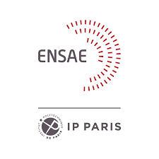

DAIMLER Truck
Mai 2022 - Août 2022
Advanced Analytics Intern
- Analyse de données (SQL, Python, Databricks)
- Conception d'algorithmes de Machine Learning pour un projet de Predictive Quality
- Utilisation de MS Azure

Etudiant Ingénieur Civil des Mines
Etudiant ingénieur de l'ENSAE Paris et des Mines de Saint-Etienne.
J'ai 21 ans et je suis originaire d'Alsace. Après deux années de classes préparatoires effectuées au lycée Kléber de Strasbourg, je suis actuellement en double-diplôme Ingénieur Civil des Mines et Ingénieur Statisticien Economiste de l'ENSAE Paris.
Retrouvez ci-dessous mes expériences professionnelles notables.
Advanced Analytics Intern
Stagiaire en production
Assistant informatique
Retrouvez ci-dessous des détails sur ma formation.
Diplôme d'Ingénieur Statisticien Economiste
Ingénieur Civil des Mines - Diplôme généraliste
Semestre à l'étranger en transfert de crédits.
Classes préparatoires aux grandes écoles. Acquisition de méthodes de travail, de rigueur et de rapidité.
Ci-dessous quelques unes de mes compétences pratiques. Celles-ci complètent une capacité d'abstraction et des connaissances théoriques approfondies en classes préparatoires et en école d'ingénieur.


 Le sport occupe une grande partie de mon temps libre. Après quelques années de pratique
d'athlétisme en club et plus particulièrement des disciplines de demi-fond, je continue de m'entraîner fréquemment en course à pied. Si la priorité dans ma pratique reste le plaisir, l'amélioration de mes records personnels
constitue une véritable motivation. En parallèle de la course, je suis amateur de cyclisme et effectue régulièrement des sorties sur route. Avec moins de régularité, je m'entraîne aussi en natation, sport que
je pratiquais en club plus jeune. J'apprécie également le ski, le tennis, et tous les sports d'une manière générale, que je pratique volontier avec des amis ou en famille.
Le sport occupe une grande partie de mon temps libre. Après quelques années de pratique
d'athlétisme en club et plus particulièrement des disciplines de demi-fond, je continue de m'entraîner fréquemment en course à pied. Si la priorité dans ma pratique reste le plaisir, l'amélioration de mes records personnels
constitue une véritable motivation. En parallèle de la course, je suis amateur de cyclisme et effectue régulièrement des sorties sur route. Avec moins de régularité, je m'entraîne aussi en natation, sport que
je pratiquais en club plus jeune. J'apprécie également le ski, le tennis, et tous les sports d'une manière générale, que je pratique volontier avec des amis ou en famille.
Mon profil vous intéresse ? Vous avez besoin d'informations supplémentaires ou un projet à me proposer ?
N'hésitez pas à me contacter ! Je vous répondrai dans les meilleurs délais.